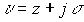
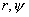
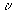

|
В. И. ЕЛИСЕЕВ ВВЕДЕНИЕ В МЕТОДЫ ТЕОРИИ
ФУНКЦИЙ ПРОСТРАНСТВЕННОГО КОМПЛЕКСНОГО ПЕРЕМЕННОГО |
|
10.11. Новая числовая система – новый расчетный аппарат в теоретической физике
До настоящего времени существуют только две числовые системы: действительные числа и комплексные в смысле Коши. Попытку расширения поля комплексных чисел в смысле Коши диктует современная физика. Теоретическая физика установила такие понятия например, как световой конус, которые требуют в числовом поле адекватных понятий. Знаменитые преобразования Лоренца написаны в покоординатном виде. Интервал Минковского введен, следуя гипотезе Римана о квадратичной зависимости координат между собой.
На современном математическом языке структура задается корнем квадратным из суммы квадратов расстояний между соседними точками по координатам.
В плоскости имеем
В декартовых координатах
, где в обоих случаях дифференциалы координат. По существу это реализация теоремы Пифагора в трехмерное пространство, если опираться на постулаты и аксиомы Евклида.Согласно основной ГИПОТЕЗЕ РИМАНА квадрат интервала между двумя бесконечно близкими точками
величина, где есть симметрический тензор  , называемый метрическим тензором. Тензор представляет собой числовую величину, которая удовлетворяет аксиомам скалярного произведения. Инвариантная квадратичная дифференциальная форма определяет пространство Римана. В каждой точке пространства Римана задано поле тензора . Таким образом, пространство Римана не является числовым пространством. ГИПОТЕЗА РИМАНА соответствует только пространству двух измерений –числовому комплексному пространству в смысле О.КОШИ.
, называемый метрическим тензором. Тензор представляет собой числовую величину, которая удовлетворяет аксиомам скалярного произведения. Инвариантная квадратичная дифференциальная форма определяет пространство Римана. В каждой точке пространства Римана задано поле тензора . Таким образом, пространство Римана не является числовым пространством. ГИПОТЕЗА РИМАНА соответствует только пространству двух измерений –числовому комплексному пространству в смысле О.КОШИ.
Расширение поля комплексных чисел О.КОШИ показывает, что ГИПОТЕЗА РИМАНА есть частный случай новой числовой системы. Начиная с пространства трех измерений, гипотеза не соблюдается.
Гипотезы, постулаты являются категориями, справедливость которых не оспаривается до тех пор, пока не возникает противоречие с теми положениями, которые легли в основу их формулировок. В данном случае появление новой системы чисел опровергает гипотезу Римана.
Из этого следует вывод, что ОТО А.Эйнштейна и РТГ А. Логунова не являются удовлетворительными, так как описывают не реальное физическое пространство -время.
Теории ОТО А.Эйнштейна и РТГ А.Логунова исследуют структуру пространства –времени оставаясь в рамках гипотезы Римана и пространства Минковского. Однако аппарат тензорного исчисления и гипотеза Римана не описывает структуры пространства. В каждой точке риманова пространства интервал представляет собой алгебраическую квадратичную форму относительно дифференциалов .Точка описывается при этом массивом координат . Функции в этом пространстве являются функциями многих переменных. Структуру характеризует прежде всего вложенность массивов один в другой, а это отсутствует в пространстве Римана и Минковского. Интервал является единственным параметром, который определяет связь массивов, и поэтому не описывает структуры.
До настоящего времени точка в пространстве ( как основной модельный объект в теоретической физике) определяется массивом значений координат
.
Структура этого пространства вводится через гипотезу Римана, согласно которой квадрат интервала
есть квадратичная форма записи разностей координат точекКоэффициенты
в матричной форме, определяющие интервал между двумя близкими событиями в Общей Теории Относительности (СТО), являются функционалом от энергии –импульса тензора материиЭта функциональная связь определяется с помощью знаменитого уравнения Эйнштейна
 ,
,
где
-тензор кривизны второго ранга, а R-скалярная величина,G-гравитационная постоянная.
Для решения должны вводиться дополнительные условия, но это не предмет дискуссии на этом этапе рассмотрения допустимых систем исчисления.
Д.И. Блохинцев отмечал, что СТО допускает столь же общее преобразование координат, что и геометрия Римана, Огромный произвол, содержащийся в этом преобразовании, может сводиться к нулю особенностями, содержащимися в самой задаче.
“Качественный шаг в объединении пространства и времени в одно единое целое и введение соответствующей геометрии, по существу, и есть главное содержание специальной теории относительности. “ А.А. Логунов.
В СТО А. Эйнштейна за структуру пространства отвечает интервал в соответствии с гипотезой Римана, а в РТГ А. Логунова интервал определен в пространстве Минковского. Оба выражения не соответствуют реальному физическому пространству.
Исследуем соответствие интервала Минковского числовому полю.
В псевдоевклидовом пространстве Минковского интервал записывается через квадратичную форму в виде
В комплексном пространстве интервал Минковского соответствует модулю комплекса
, таким образом, координата времени занимает особое положение относительно интервала трехмерного массива . Трехмерный массив относительно времени выступает как одна координата, Иными словами рассматривается плоскость . Отсюда следует вывод, что Интервал Минковского не соответствует пространству четырех измерений, а уравнения Шредингера описывают явления не соответствующие реальному физическому пространству, а являются лишь грубым приближением.
Трехмерный массив также не определяет пространство,
К настоящему времени сложилось устойчивое представление, что если задан массив (x,y,z), и интервал как корень квадратный из суммы квадратов переменных этого массива, то задано пространство. Это представление не является результатом внутреннего развития математики и является грубым приближением к реальному физическому пространству. Изучать в этом пространстве явления микромира нельзя. Но с этим в настоящее время согласна и квантовая механика. Провал с теорией сильных взаимодействий. Провал с попыткой создания единой теории поля.
Комплексное пространство содержит подпространство делителей нуля, которое выделяет в нем пространство большей по величине размерности. В цилиндрических координатах подпространство делителей нуля соответствует световому конусу. В сферических координатах комплексных световой конус сворачивается в изолированную ось радиуса в силу наличия изолированного аргумента .
Далее.
Трехмерный комплекс имеет модуль равный интервалу массива только в частном случае
Таким образом, комплекс
рассматривается относительно третей координаты как одна координата. Из этих выкладок также следует, что пространство-время Минковского не содержит трехмерное Евклидово пространство. Оно заменено функцией трех переменных относительно временной координате.Четырехмерный комплекс, модуль которого будет равен интервалу Минковского введенного для массива координат, будет иметь вид
где
выражаются в действительных числах,В четырехмерном комплексном пространстве модуль в общем виде определяется по формуле

где
-модуль и аргумент комплекса -модуль и аргумент комплекса
Таким образом, в пространстве четырех измерений изменяется понятие точки и линии и поэтому говорить обо интервале как расстояние между ближайшими точками бессмысленно, так как необходимо указывать кроме модуля аргумент, который закручивает точку около цилиндрической оси. Точки
представляют объекты на комплексных цилиндрических линиях, которые в пространстве дают одну структурную точку .Векторные и тензорные координаты дают интервал Римана в ОТО А.Эйнштейна и интервал Минковского в РТГ А.Логунова, который не соответствует реальному физическому пространству.
Рассмотрен частный случай комплексного пространства с целью на его примере показать, что используя в теоретической физике систему отсчета массива координат теряется структура пространства в точке.
Одновременно становится очевидным, что уравнения А. Эйнштейна в СТО и уравнения А. Логунова в РТГ не соответствуют реальному физическому пространству.
К настоящему времени экспериментальные исследования в микромире (реакции распада и образования частиц, открытие новых частиц и т.д.) показывают многомерность пространства и его структурирование. Тензорный аппарат СТО и РТГ не вводит в уравнения структуру пространства. Однако, если рассмотреть решение Шварцшильда, то можно сделать вывод о наличие в интервале изолированного направления, как гравитационного пространства более высокой размерности, чем то, в котором находится тяжелая масса. Это подпространство ограничено радиусом
, получившего название радиуса Шварцшильда.
Исследованием явления сжатия тяжелой массы из пространства в пространство  и ограничено исследование структуры пространства –времени как в СТО А. Эйнштейна так и в РТГ А. Логунова.
и ограничено исследование структуры пространства –времени как в СТО А. Эйнштейна так и в РТГ А. Логунова.
Выше приведенные выкладки показывают, что интервал Минковского следует рассматривать как модуль комплексного числа, описывающий структуру пространства.
Проведенные выкладки демонстрируют, как пространство меньшей размерности вкладывается в пространство большей по величине размерности. Поэтому процесс сжатия тяжелой массы это структурный процесс с непрерывным образованием изолированных направлений разного уровня, через которые проходят строго определенные величины энергии обменной массы между этими уровнями. Процесс сжатия это процесс многовариантный по структуре образования количества изолированных  - туннелей (туннели собираются в блоки, блоки в другие блоки) на каждом уровне. Процесс взрыва с делением тяжелого тела неизбежен как один из вариантов. Эта детализация процесса не заложена в теориях гравитации, поэтому рассматривать какая черная дыра образуется в результате сжатия по этим теориям оценить нельзя. Кроме того надо учесть при сжатии ближайшие объекты (в том числе и уже обнаруженные черные дыры), и учесть какое количество энергии идет от них для сжатия.
- туннелей (туннели собираются в блоки, блоки в другие блоки) на каждом уровне. Процесс взрыва с делением тяжелого тела неизбежен как один из вариантов. Эта детализация процесса не заложена в теориях гравитации, поэтому рассматривать какая черная дыра образуется в результате сжатия по этим теориям оценить нельзя. Кроме того надо учесть при сжатии ближайшие объекты (в том числе и уже обнаруженные черные дыры), и учесть какое количество энергии идет от них для сжатия.
Черные дыры – это космические объекты, образование которых контролируется энергией окружающего тяжелую массу космического пространства и его структурой, а не энергией этой тяжелой массы. Структура черных дыр характеризуется своим интервалом изменения энергии, проходящей через изолированные туннели. Это условие как граничное должно вводиться при решении уравнений.
Квантовая матричная теория Гейзенберга, а также волновая теория Шредингера рассматривают точку в пространстве как массив координат. Условия, которые накладываются на структуру массива в виде гипотезы Римана приводит к потере расчета детальной последовательности явлений, ввиду того что в пространстве не рассматривается структура.
Теория -матриц, разработанная В. Гейзенбергом, для взаимодействия частиц имеет дело лишь с результатом процессов столкновения, а не с последовательностью явлений, происходящих в течении самого процесса. Аналогично обстоит дело и в СТО А.Эйнштейна и ТРГ А. Логунова. В этих теориях математический аппарат не вводит в уравнения объекты-числа, которые несут ответственность за полевую материю.
Мини оглавление:
[0], [1.1.1, 1.1.2, 1.1.3, 1.1.4, 1.1.5, 1.1.6, 1.1.7, 1.1.8, 1.2, 1.2.1, 1.2.2, 1.2.2.a, 1.2.2.b, 1.2.2.c, 1.2.2.d, 1.2.2.e, 1.2.2.f, 1.2.2.g, 1.2.2.h, 1.2.3, 1.3.1, 1.3.2, 1.3.3, 1.3.4, 1.3.5, 1.3.6, 1.4.1, 1.4.2, 1.5, 1.6, 1.7.1, 1.7.2, 1.7.3.1, 1.7.3.2, 1.7.3.3, 1.7.4.1, 1.7.4.2, 1.8.1], [2.1, 2.2],[3.1, 3.2, 3.3, 3.4.1, 3.4.2, 3.4.3, 3.4.4, 3.4.5],[4.1, 4.2, 4.3, 4.4],[5.1, 5.1.Рис.52, 5.2, 5.3, 5.4, 5.4.Т1, 5.4.Т2, 5.4.Т3, 5.5.1, 5.5.2, 5.5.3, 5.5.4],[6.1.1, 6.1.2, 6.2.1, 6.2.2, 6.2.3, 6.2.4, 6.2.5, 6.3, 6.4.1, 6.4.2, 6.5.1, 6.5.2],[7.1, 7.2, 7.3, 7.4, 7.5, 7.6, 7.7.1, 7.7.2, 7.8.1, 7.8.2, 7.8.3, 7.9],[8.1, 8.2.1, 8.2.2, 8.3, 8.4, 8.5, 8.6, 8.6.T1, 8.7, 8.8.1, 8.8.2, 8.8.3, 8.9.1, 8.9.2, 8.9.3, 8.10, 8.10.T2, 8.10.T3],[9.1, 9.2, 9.3, Рис.88, 89, 90, 91, 92, 93, 94, 95, 96, 97, 98, 99, 100],[10.1, 10.2, 10.3, 10.4, 10.5, 10.6, 10.7, 10.8, 10.9, 10.10, 10.11, 10.12, 10.13, 10.14, 10.15.1, 10.15.2, 10.16.1, 10.16.2, 10.17, 10.18],[11]
Размещенный материал является электронной версией книги: © В.И.Елисеев, "Введение в методы теории функций пространственного комплексного переменного", изданной Центром научно-технического творчества молодежи Алгоритм. - М.:, НИАТ. - 1990. Шифр Д7-90/83308. в каталоге Государственной публичной научно-технической библиотеки. Сайт действует с 10 августа 1998.
E-mail: mathsru@gmail.com